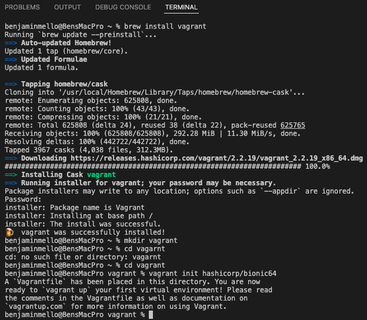
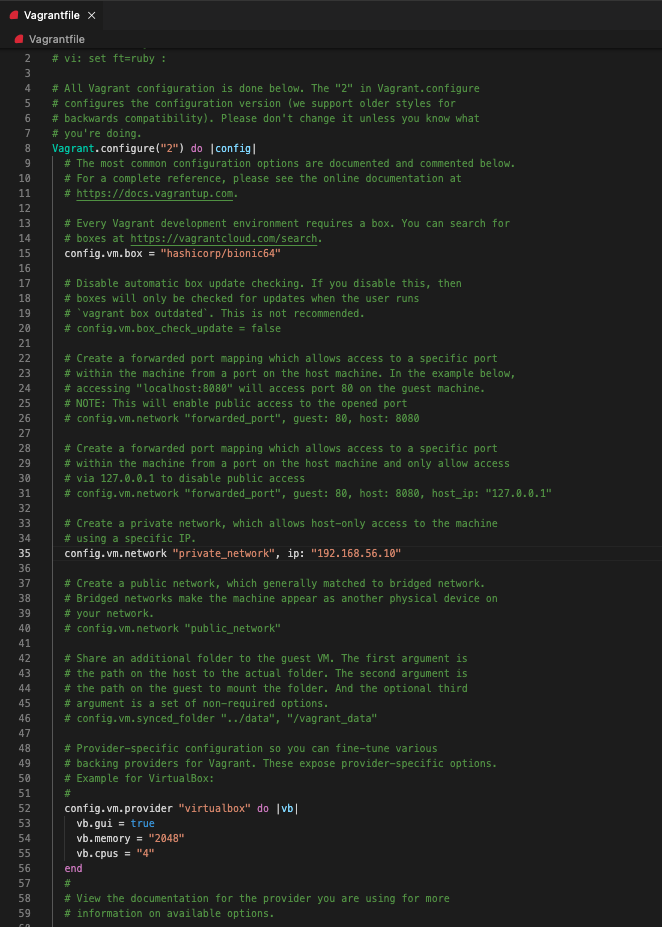
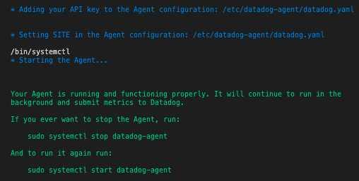

Setting up the Vagrant VM¶
1. Installed Vagrant via Brew. I have been using Brew on macOS to install,uninstall,update,and manage all development tools.
~ % brew install vagrant
2. Create Vagrant Directory
~ % mkdir vagrant
3. Change to Vagrant Directory
~ % cd vagrant
4. Configure Vagrant environment to run Ubuntu VirtualBox
vagrant % vagrant init hashicorp/bionic64
5. Open the ‘Vagrantfile’ in VS Code to configure the VM
Before starting the VM, I took a look at the configuration file to make changes. I configured the network with a private network address as I thought it was the safest option. It allows you access to the VM from your own computer but it is not accessible from the global internet. The address is reseved in the private address space.
I also upgraded the amount of memory from 512MB to 2GB and added 4 CPUs to the VM in this file. I thought this would be beneficial to running the Datadog Agent.
6. Create and start VM based on Configuration File
vagrant % vagrant up
Installing the Datadog Agent¶
1. Once the VM is running - ssh into the box.
vagrant % vagrant ssh
2. Update the package repos in Ubuntu as several packages are needed for this challenge.

3. Sign up for a Datadog Free Trial and install the Datadog Agent on the Ubuntu VM through ssh. The easy one-step install can be found under Integrations > Agent > Ubunutu after logging in to your account.
DD_AGENT_MAJOR_VERSION=7 DD_API_KEY=<YOUR_DD_API_KEY> DD_SITE="datadoghq.com" bash -c "$(curl -L https://s3.amazonaws.com/dd-agent/scripts/install_script.sh)"Note
If you do not want the agent to start automatically after installation, prepend
DD_INSTALL_ONLY = trueto the above script before running it
The Datadog Agent is installed and now running